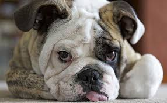

Getting The Best Behavior From Your Dog
Are you looking for tips for being a responsible dog owner? If so, you have come to the right place. There are quite a few tips that can help you when it comes to owning a dog. Continue reading to learn more about being the pet owner your dog deserves.
Take care to keep your dog cool while traveling during the summer by car. Even with your air-conditioning on, the dog may become over-heated in his pet carrier. A simple and low-cost countermeasure is freezing a few gallon jugs of water and placing them near him where he can curl up and cool off.
When you have a dog, make sure that you give him enough water. Water should be made available to your dog at all times of the day, particularly in the summertime. Put his water bowl somewhere where no one will trip over it, otherwise you'll be cleaning your floors all day!
If your dog has fleas, and they fall off his coat onto your floor, vacuum them up. However, remember that fleas are pretty good escape artists, so you need to throw out the bag immediately after you are finished. To be on the safe side, tape the bag completely shut before you take it out to your trash can.
If your young dog is teething and gnawing at everything, buy him a fun chew toy and keep it in the fridge. Not only does this provide him with a good alternative to your furniture, but the cold will help to make his gums feel better. Most younger dogs gnaw out of necessity, not poor manners.

If your vet gives you medication to take home and administer to your dog, be sure and ask for ideas on getting him to swallow it. Dogs differ in their tolerance of pills and badly-flavored liquids, so have a few tricks up your sleeve in case he resists. Getting a dog to take medicine is important, but often challenging.
If your dog does something that you do not like, try to avoid just saying no. To your dog, no doesn't really explain what you want your pup to do. Instead of saying no if your dog is jumping, try to get your dog to sit or lay down. By doing this, you provide your dog with an instruction of what to do.
Remember that dogs are creatures of habit and anything you start with him will be expected in the future. If you're not keen on him sleeping with you, don't let him do it only on occasion. Likewise, if you don't want him begging at the table, never offer him a bite of people food. He will learn and accept things if you are consistent.
Brush your dog often, even if he's got short hair. It's good for his coat and skin and can alert you of possible issues like fleas, tics and eczema. The dog will also enjoy the attention and brushing him regularly will keep more of his fur from flying around the house and landing on your furniture and carpets.
Check to make sure your dog's collar is adjusted properly by fitting two of your fingers comfortably underneath it and pulling gently. There should be just enough room to do this and no more, otherwise he may be able to wiggle out of it. Always keep it on, except during crate transport, as the collar can get snagged and injure.
It is very common for objects to get lodged in the pads of your dogs paws. Check them regularly to make sure that nothing is in there. If you see something, be very careful about taking it out, or it may become lodged even deeper. It is a wise to use tweezers for this.
If you breed your dog, do so responsibly. The AKC advises all owners of pure-bred dogs to make an effort to advance the breed and discard all other motivations, such as money or experimentation. Consider the repercussions of your actions before allowing your dog to mate and create a litter of puppies.
If you are training your dog, make sure the treat you are giving him really is desirable. Pets have preferences too, and if your dog does not like the treat you are providing, there is not going to be much motivation to do the right thing. Try out a few different brands, and remember that soft, chewy treats are generally the most well-received.
Check you dog for parasites and take preventative measure. Flea and tick collars are important. Keep in mind certain collar work better in different seasons and geographic areas. In addition, check your dog's ears. Ear mites are common. Also, check the dog's stool to ensure he hasn't picked up worms in his digestive system.
If your dog seems to have a bad reaction from every shampoo you use on him, try a green product. Most commercial brands of dog shampoo contain a lot of things like phosphates and sulfates, which can irritate your dog's skin. They are also harmful to the environment so you'll be solving two problems at once.
Some people think it is cute to give their dog alcohol, but it is dangerous. In high doses, alcohol is toxic to humans and even more so for animals. In addition, it affects co-ordination, causing accidents, and can decrease a dog's respiratory rate. Even small amounts of alcohol can kill a dog.
It is natural to want to get your dog trained as quickly as possible. However, remember that there is a limit as to how fast this process is going to go. If you are not realistic, you are much more likely to get frustrated with your pet, which could damage your relationship. Your pet will learn over time, but it may not happen as fast as you would like.
If you want a happy and healthy dog, you must be a responsible pet owner. There are many things you must do and that will not only help your dog, but will be helpful to you and your relationship with him, too. Use the tips here to make sure your time with your dog is the best it can be.